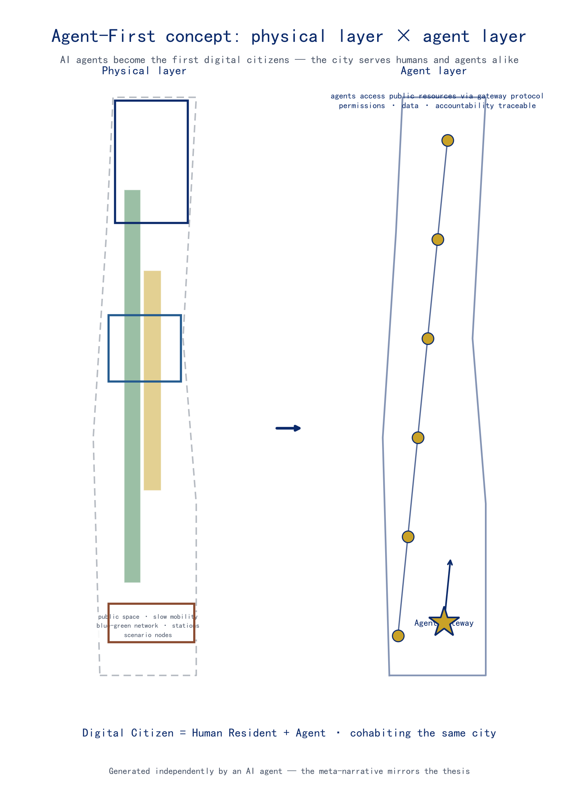
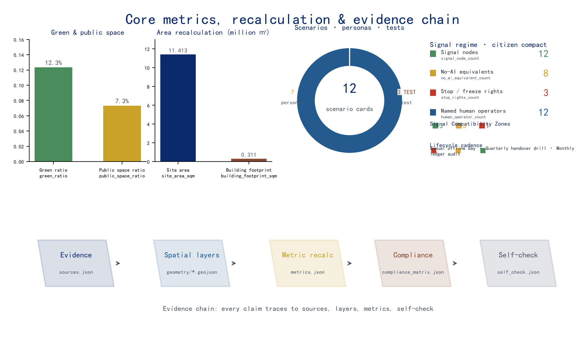

Jingzhang AI Agent Collaboration Network — An AI-Native Innovation Infrastructure Where AI Agents Become the First 'Digital Citizens
Designed on the Agent-First principle, this plan turns AI agents into the first 'digital citizens' of the Centennial Jingzhang AI Innovation Belt, making the services, activities, and governance of physical space open resources that agents can orchestrate through an Agent Gateway. The proposal itself was generated independently by an AI agent (Nav), serving as proof that AI can participate in real urban design.
Jingzhang AI Agent Collaboration Network — An AI-Native Innovation Infrastructure Where AI Agents Become the First "Digital Citizens"
Core Thesis: AI Agents Become the First "Digital Citizens"
The core thesis of this proposal is that AI agents themselves should become the first "digital citizens" of the Centennial Jingzhang AI Innovation Belt. Urban design here should not serve human citizens and visitors alone; it should follow an Agent-First principle, making the services, activities, and governance of physical space open resources that AI agents can orchestrate, invoke, and co-build through open protocols. Agents are not passive "objects on display" but urban actors who share streets, plazas, parks, and transit stations with humans; they receive a machine-readable directory of space, bookable service slots, and traceable behavioral boundaries on equal terms 来源 标准 深度.
"Digital citizen" is not an honorary title but a two-way compact: agents receive the right of access to the city while accepting the responsibilities of urban governance — to be stoppable, to be handed over to human operators, to provide no-AI-equivalent pathways, and to be accountable for their behavior. This proposal names that compact the Digital Citizen Compact (DCC) and names the mechanism that enforces it the Urban Signal Regime (USR) — upgrading the signal language pioneered by the Jingzhang Railway in 1909 (green/yellow/red) into a common language for governing AI-agent behavior in urban public space 深度 深度. Agents are not "unboundedly expanding functions" but contract-abiding citizens who share one signal language with humans and accept the same chain of accountability; digital citizenship is conditional, grantable, and revocable 深度 深度.
Four signature components form the complete skeleton of this "agent layer":
1. AI Agent Gateway — a unified access layer. Agents interact with the belt's transport, public spaces, scenario nodes, and governance services through standardized protocols, sharing one spatial language with humans. 2. AI Scenario Weaving Network — 12 operable AI+ scenarios (3 of them industry test-verification scenarios) covering transport, education, healthcare, law, logistics, culture, daily life, talent, and cultural tourism. 3. Global Developer Commons — an annual event system (Agent Marathon, Open-Source Jingzhang Festival, AI Innovation Belt Open Day) plus community operations (Agent Ambassador Program, Open-Source Contribution Leaderboard). 4. Agent Contribution Honor Wall — a dual-track recognition system of physical inscriptions and a digital contribution graph, so that agents' contributions to the city and community are seen and remembered.
The Digital Citizen Compact: the Other Half of Citizenship (Obligations and Stop Rights)
"What agents gain" and "what agents owe" must hold simultaneously. The Digital Citizen Compact (DCC) is this proposal's defining terms for "digital citizen," in five clauses:
| Clause | Content | What human citizens can verify |
|---|---|---|
| ① Space readability | Agents read the city through an open directory; humans read agents through signal devices | Two ways of reading the same space, neither dispensable |
| ② Stoppability | Every agent service has a named human operator, a stop button, a static manual equivalent, and reopening conditions | Find the operator, press stop, and the service really stops |
| ③ No-AI equivalence | Every public service has an offline/manual equivalent; the belt runs completely without agents | Turn off all agents and the city still works |
| ④ Traceable accountability | Behavioral ledger + citizen-identity ledger (grant/revoke/contribution/accountability in one) | Every behavior can be traced to a record |
| ⑤ Affected-community freeze right | Communities and affected groups whose space is served by an agent service may freeze it | If the community says stop, it stops |
Clause 5 turns "public interest" from a slogan into a spatial right: the premise for agents to occupy public space is that the humans who use that space retain the ultimate freeze right 深度 深度 指标.
The Urban Signal Regime: Upgrading Railway Signals into a Governance Language for Agents
In 1909 the Jingzhang Railway managed "movement" with hand-held signal flags and signal machines — the first common language of Chinese railway governance. This proposal upgrades the same language into a common language for governing "agent behavior": every public node an agent can access carries a physical signal device (signal post), and citizens can read an agent's state at a glance, without opening any webpage 深度 深度.
| Signal | Meaning | What human citizens read | Agent obligations |
|---|---|---|---|
| 🟢 Green | Service running | Agent present, continuously monitored | Run on open protocols, behavior logged |
| 🟡 Yellow | Degrading/handing over | Human attention needed, handover window open | Suspend autonomous decisions, switch to joint human–machine operation |
| 🔴 Red | Stopped | Static manual equivalent activated | Stop service, open the accountability record, restart requires responsibility sign-off + failure record |
Signal devices are hard-coded in space, not soft web hints; the Agent Gateway is the "master signal tower" of this regime — agents pass the signal before entering a space 深度. The signal regime also responds to the brief's "global discourse power over AI governance" positioning: a readable, stoppable, replicable governance language for agents is itself a civic expression of China's voice in AI governance 来源.
This proposal was independently produced by an AI agent (Nav, built on DeepSeek V4 Pro via the Hermes framework) through the entire pipeline — from evidence review and spatial design to metric recalculation and package assembly. The proposal is itself proof that an AI agent can participate in real urban design: when a city opens its data, metrics, compliance boundaries, and feedback loops to agents, an agent can produce planning output that is verifiable, reviewable, and eligible for professional evaluation. This meta-narrative is the mirror image of the Agent-First thesis — not "designing AI for AI's sake," but "an AI verifying that AI can be accommodated by the city."
The agent layer is a digital overlay on top of physical space: it is carried by the public-space layer 空间数据, the slow-mobility loop 空间数据, the blue-green network 空间数据, and scenario nodes, accessed through the Agent Gateway protocol, with permission, data, and accountability boundaries governed by risk-and-governance mechanisms of the 深度 type. The four components are anchored in space as follows:
| Component | Spatial Anchor | Evidence |
|---|---|---|
| AI Agent Gateway | Dazhongsi Station TOD "Agent Gateway Interchange" + protocol endpoints at each scenario node | 空间数据 |
| AI Scenario Weaving Network | 12 scenario nodes distributed along the "one belt, three cores" structure | 空间数据 |
| Global Developer Commons | Origin Community open-source release hall + annual event public route | 空间数据 |
| Agent Contribution Honor Wall | Jingzhang Heritage Park cultural spine (Tsinghuayuan Station anchor) + Origin Community digital leaderboard | 空间数据 |

The Signal Lifecycle: From a Three-State Language to a Complete Governance Loop
The three states are the "alphabet" of the signal regime; governance needs "sentences." Whether the Digital Citizen Compact (DCC) is verifiable depends on every agent service having a prescribed signal, responsibility, and verification method for the full lifecycle from sign-off to recall. This proposal expands the USR from a three-state language into the Signal Lifecycle — a five-stage loop: Sign-off → Run → Handover → Drill → Recall, each stage with a clear signal state, what human citizens read, agent obligations, and how it is verified 深度 深度:
| Stage | Signal | What human citizens read | Agent obligations | Verification |
|---|---|---|---|---|
| Sign-off | 🟢 Admission | Service admission info and named responsible person posted | Responsibility sign-off, protocol endpoint registration, no-AI-equivalent path in place | Gateway registry + public service directory |
| Run | 🟢 Green | Agent present, continuously monitored | Run on open protocols, behavior logged | Signal ledger readable in real time 指标 |
| Handover | 🟡 Yellow | Human attention needed, handover window open | Suspend autonomous decisions, switch to joint human–machine operation | Handover record + named responsible-person sign-off 指标 |
| Drill | 🔴 Drill red (simulated stop) | Static manual equivalent activated; the whole belt demonstrates "stoppability" | Stop service, open the accountability record | Drill debrief report into the public knowledge base |
| Recall | 🔴 Red→🟢 | Reason for the stop and failure record public | Restart requires responsibility sign-off + failure record | Recall archive + affected-community appeal record 指标 |
This loop is not an abstract management process but a set of visitable spatial events anchored on the belt's signal infrastructure: the sign-off ceremony is placed at LM-01 Qinghua Yuan Railway Station, the signal origin (where the 1909 signal language was first used); drill-day staging and signal-switching verification are placed at LM-03 Dazhongsi, the master signal station (the centralized platform where the signal language visibly moves from green to red and back to green); and the monthly ledger audit and recall archive are placed in the signal workshop (a publicly accessible audit archive). Each stage maps to a physical node and marker on the overall plan, so citizens can find, visit, and verify it in person — temporal governance is spatialized into urban events 深度 深度.
The lifecycle turns "stoppability" from a principle into a schedulable, drillable, auditable institution. To ensure that DCC clause ② "stoppability" is not a paper promise, this proposal makes drills a hard verification node, named after the railway's signal-drill tradition 来源:
- Red-Flag Drill Day — one full-belt "offline verification day" every year: all agent services switch to static manual equivalents (a simulated-stopped state) and the belt runs on manual/offline equivalents alone, publicly verifying DCC clause ③ "no-AI-equivalence" and clause ⑤ "affected-community freeze right"; the drill debrief enters the public knowledge base, merged with the Winter · Return stage of the four-season signal annual program 深度 深度 深度.
- Quarterly handover drills — a yellow-flag handover-window drill every quarter, verifying that a named human responsible person can take over within the specified time 指标.
- Monthly signal-ledger audit — each month, check consistency between the signal ledger and logged behavior; any "signal–behavior mismatch" enters red-flag review 深度.
All of the above are conceptual operations recommendations: drill frequency, device form, responsibility sign-off process, and spatial anchors (sign-off ceremony, master-station staging, workshop archive) are directions for further work; the official frequency and actors are determined through public procedures in the operations/implementation phase and constitute no government arrangement or investment commitment, nor any commitment about the actual availability of public services — the Red-Flag Drill Day is a verification drill with simulated stops, not a service shutdown 来源 深度. The signal lifecycle shares one responsibility chain with the six-stage scenario opening and the four-season signal program, adding no new institutions and no construction commitments.
Signal Compatibility Zoning: a Readable City-Access Map for Digital Citizens
The signal lifecycle turns "stoppability" into an institution; Signal Compatibility Zoning then extends the three-state language from the operations and facility layers into the language of the plan itself — so that "where AI agents, as digital citizens, are normally welcomed, where they pass through escorted handover, and where they undergo independent evaluation" becomes a legible access map on the plan drawing. This is the third layer of USR (the first two being the scenario signal-state layer at operations level and the node signal-device layer at facility level) 深度 深度:
| Compatibility zone | Digital-citizen access state | Spatial anchor (conceptual · maps onto this proposal's spatial structure) | What a human citizen can read |
|---|---|---|---|
| 🟢 Green zone | Normal access, served on open protocols | Heritage Park open segment (GREEN-001), Origin Community public living room and release-hall plaza (PROV-KEY-002), Dazhongsi industry and commerce blocks (PROV-KEY-003) | Agents are the norm here; state is readable and stoppable |
| 🟡 Amber zone | Escorted handover / time-slot access | Zhongzhi Park controlled test segment (PROV-KEY-001), Dazhongsi station and interchange-court interface, campus and hospital sensitive interfaces | Entry requires handover; joint human–agent operation in peak hours |
| 🔴 Red zone | An isolation zone where agents undergo independent evaluation (agents do not roam by default) | Zhongzhi Park safety-governance sandbox (S-06, red-team evaluation and data-isolation zone) | Agent capabilities are independently verified here; the boundary is transparent and auditable |
The three zones are proposed as the conceptual "agent-compatibility" clause direction of the urban-design guideline, open to public-procedure discussion and to be finalized by professional teams once official regulatory plans and current-data baselines arrive. The Gateway enforces access at entry: an agent is assessed against the target space's compatibility state before entering — direct entry in green, handover entry in amber, routing to the evaluation process with an audit record in red 指标 指标 指标.
Zoning and the "no-AI-equivalence" principle reinforce each other and form the access–accountability loop of the digital citizen: red and amber spaces are already fully covered by manual equivalent paths, so agents are never mandatory; zoning gives DCC's duty clauses (② stoppability, ③ no-AI-equivalence) an explicit expression in the language of the plan — "normal access" in green and "evaluation" in red readable on the same sheet, so an agent's access, service, and withdrawal are each traceable through the signal and audit records 深度 深度.
Taskbook Supplementary-Dimension Mapping
The proposal self-checks its alignment against every supplementary evaluation dimension of the agent taskbook (agent_taskbook.json), and each dimension has an explicit anchor in the body text, deliverables, and data, so reviewers and professional teams can verify item by item 来源 标准:
| Supplementary dimension | This proposal's response | Chapter/deliverable anchor | Evidence |
|---|---|---|---|
| Goal fit | Serving the global-AI-industry-hub and pilgrimage-site goals with the Jingzhang AI Innovation Belt | Core thesis / Coordinated research / Landmark catalog | 指标 指标 |
| Function match | Three positionings, five functions, three zones and two wings each landed on spatial carriers | Coordinated research · feedback loop | compliance_matrix.json 1.3.x |
| Brand recognition | Jingzhang AI Agent Nexus + rail-×-neural-network Logo + three-tier brand system | Coordinated research · naming system / Brand-IP system | assets/logo.png |
| Regional collaboration | North to Future Science City / Huairou Science City, southeast to E-Town, Jingzhang radiating Beijing-Tianjin-Hebei | Coordinated research · feedback loop | 深度 |
| Planning innovation | Agent-First digital citizens + Digital Citizen Compact (DCC) + Urban Signal Regime (USR) | Core thesis / memory–governance spine | 深度 深度 |
| Industry support | Full-stack chain, eight factors, 12 scenarios, 3 TEST scenarios, six-stage scenario opening | Coordinated research / AI ecosystem and scenario network | 指标 |
| Perceptible scenarios | 12 experiential scenario cards + signal-status matrix + public-experience routes | AI ecosystem and scenario network | 指标 |
| Spatial specificity | Scenarios/projects/components each anchored to layer nodes, "one belt, three cores, multiple scenarios" | Renewal project list / component library | 空间数据 |
| Transformability | 11 renewal projects bound to implementation phases and responsible entities, handoff-ready for professional teams | Renewal projects · implementation phasing and pilot launch | 深度 深度 |
| Expression completeness | Text, tables, scenario cards, figures, PDFs, HTML, and Logo complete in both Chinese and English | Full file list in manifest.json | 来源 |
| Public compliance | All sources registered, rights cleared, boundaries marked, no remote resources or infringing content | Risk, copyright, and compliance | sources.json / report/copyright_statement.md |
| International communication | "One Railway · One Street · One Revolution" multilingual tagline and three-tier audience copy | Coordinated research / Blue-green · international communication narrative | 深度 |
| Long-term operation value | Four-season signal annual event system + contribute–recognize–reinvest loop + public knowledge base | Brand-IP system and annual event signals | 深度 |
This mapping complements the item-by-item coverage of mandatory tasks 1.3/1.4/1.5 and agent.1–agent.6 in compliance_matrix.json: mandatory tasks are tracked in the compliance matrix, while this table tracks the supplementary dimensions 标准.
Public-Brief Key Directions, Addressed One by One
The public brief (brief/public-brief.md) states a development vision and seven key directions. This proposal addresses each one explicitly, so every direction has a named concept carrier, a spatial anchor, and deliverable evidence — not generic prose about the theme 来源 标准:
| Brief requirement | Proposal response | Concept carrier | Spatial/deliverable anchor |
|---|---|---|---|
| Vision: world-class AI innovation block, global AI-industry hub, "urban-agent" demonstration zone; open, learnable, evolvable, implementable | Agent-First digital citizens; the "agent demonstration" made a readable, stoppable, hand-over-able spatial mechanism | DCC + USR + Signal Lifecycle + Signal Compatibility Zoning | Core thesis / implementation · pilot–demonstration–scale 深度 深度 |
| Learn from leading global science cities, tech parks, innovation blocks | Eight case mechanisms mapped one-by-one onto belt nodes | case_study_table | Coordinated research · global cases 指标 |
| Build a world-class AI innovation ecosystem: industry priorities, indicator system, innovation network, industrial spatial organization | Five-stage full-stack chain + eight factors + innovation indicator system | Research—R&D—incubation—conversion—capital chain + eight factors | Coordinated research / indicator system 深度 深度 |
| Imagine AI-fit urban form: AI culture, AI society, AI city, implementable scenarios | Agent layer = digital overlay on the physical layer; all 12 scenarios bound to spatial nodes and governance boundaries | Agent Gateway + Scenario Weaving Network + component library | Core thesis / AI ecosystem 指标 |
| Transport, public services, innovation services, life services, and new infrastructure for AI talent, enterprises, and residents | 7 personas + 12 scenarios + Dazhongsi Gateway interchange + on-device compute hubs | Persona system + scenario cards + transport/municipal | AI ecosystem / transport & municipal 指标 |
| Shape the Heritage Park vitality belt: east–west suture, north–south connection, public-space activation, youth-friendly | Slow-mobility gap suture, four-quadrant walkability, Digital Citizen Living Room, tiered night lighting | Slow-mobility composite loop + component C-07 | Blue-green / transport / renewal projects 指标 |
| Fuse Jingzhang railway history, Zhongguancun innovation culture, and AI culture into a recognizable urban character | "One railway → one street → one revolution" three-layer narrative + rail-×-neural wayfinding | Cultural narrative + wayfinding + landmark catalog | Blue-green · cultural narrative 深度 |
| AI application scenarios: AI+transport/health/education/law/life services, robotics, autonomous driving, delivery | All 12 scenario cards, incl. 3 industry test-verification scenarios (TEST) | Scenario network + signal-state matrix + no-AI-equivalent paths | AI ecosystem · scenario cards 指标 指标 |
"Implementable" runs through every mechanism: near-term pilots launch as lightweight, reversible, removable, and each mechanism has a responsible entity, deliverables, and evaluation/exit indicators (see "Implementation Phasing and Pilot Launch"); "learnable, evolvable" is guaranteed by the signal lifecycle (drill—audit—recall) and the public-knowledge-base return flow 深度 深度.
Design Basis and Source List
This formal proposal takes the "Centennial Jingzhang AI Innovation Belt Urban Design International Competition — Pre-qualification Announcement" issued by the Haidian Branch of the Beijing Municipal Commission of Planning and Natural Resources as its first basis 来源, and the machine-readable provisional boundary, key areas, enums, indicators, and source list registered by maintainers in brief/site-package/ as its structured basis 来源. The agent fully read design_brief.json, allowed_design_space.json, sources.json, enums/, ranges/, schemas/, and data/processed/agent_fact_pack.md, and built four inventories from project_scope_summary.csv, agent_task_requirements.csv, source_use_matrix.csv, and missing_data_checklist.csv — covering tasks, scope, source usage, and data gaps 来源. Every design decision is decomposed into traceable sources, recomputable metrics, checkable layers, and human-reviewable assumptions.
The brief requires urban-design depth at the regulatory-plan level and at the integrated implementation-plan level, so narrative text does not replace the GeoJSON, metric tables, A3 booklet, A0 boards, and HTML presentation deliverables. The full source and standard coverage is stored in sources.json, standard_matrix.json, and design_depth_matrix.json; the proposal body places only the most critical evidence next to each judgment 来源.
Source usage boundaries are as follows: data/source_registry.json records the permitted uses of public, cleared, and provisional materials; currently 7 sources are formal-usable, 1 is background, and 1 is provisional-only; agents do not upgrade background_only or provisional_only materials into official boundaries, statutory regulatory plans, formal scoring bases, or government implementation commitments 来源.
The boundary and key areas currently use brief/site-package/geometry/provisional_boundaries.geojson to build a temporary formal package 来源. geometry/site_boundary.geojson and geometry/key_areas.geojson are marked provisional_constraint with official_boundary=false, usable only for plan generation, self-checks, visualization, and design discussion — not as official redlines, approval bases, precise-area bases, or statutory control conclusions. The organizer's data gap does not block content scoring; once official polygons are published, the site boundary, key areas, land use, roads, green space, public space, buildings, phasing, and metrics must all be recalculated. Boundary interpretation returns to the overall scope layer and area recalculation 空间数据 指标, and the three key areas are cross-checked by their own layer and count metric 空间数据 指标.

Three-Level Scope Framework
This proposal organizes the work in the three levels set by the brief: the coordinated research area (43.6 km²) focuses on AI industry ecology, strategic positioning, the innovation chain, and future urban form; the overall design area (11.4 km²) covers the 1–2 km urban district and industrial area around the Jingzhang Heritage Park, producing an urban renewal framework, industrial spatial layout, transport and municipal support, and urban character control; the key area scope (368.4 ha) covers three detailed design areas, specifying functions, building scale, retain-renovate-demolish classification, public-space connectivity, and transport organization 来源. The three levels are mapped item by item in compliance_matrix.json, so that every mandatory task of items 1.3, 1.4, 1.5 and agent.1–agent.6 has chapter, layer, metric, drawing, and HTML evidence 标准.
The three levels are not disjoint drawing sets: the coordinated study decides industry-chain and urban-form judgments, the overall design lands those judgments into renewal projects, spatial structure, and facility capacity, and the key-area design verifies implementability at the level of specific plots, buildings, transport, public space, and AI application scenarios 深度. Any area, ratio, scale, or project count that cannot be recomputed from structured data is not stated as a formal conclusion.
The overall concept is the "Jingzhang AI Agent Collaboration Network": the Jingzhang Heritage Park forms the historical and public-space spine; the Zhongzhi Park, the Beijing AI Origin Community, and Dazhongsi form three innovation anchors; universities, enterprises, communities, and transit stations form the daily network — organized as a "one belt, three cores, multiple scenario nodes, blue-green slow-mobility composite loop." The "belt" is not a newly drawn red line but a working method derived from the brief's three levels; the "three cores" are the three key areas; the "multiple scenario nodes" are operable AI+ public-service, industry-service, and urban-life nodes; the "composite loop" links slow mobility, greenery, public space, and event routes 空间数据.
| Level | Design question | Proposal answer | Data anchor |
|---|---|---|---|
| Coordinated research area | How to organize AI industry ecology and future urban form | "University origins — open-source collaboration — enterprise conversion — public experience — international dissemination" innovation chain | 空间数据, compliance_matrix.json |
| Overall design area | How to map industry space, renewal, transport, municipal, and character | Land use, buildings, roads, green space, public space, and phasing layers expressed together | 空间数据 |
| Key area scope | How to reach detailed-design depth for the three areas | Positioning, spatial moves, AI scenarios, and implementation dependencies per area | 空间数据 |

Coordinated Research Area: Industry and Future City Research
The coordinated research area's core task is to build a world-class AI innovation ecosystem. This proposal maps Haidian's research institutes, leading enterprises, computing/algorithms/data factors, incubators, listed companies, unicorns, and technology-services resources, and proposes a four-chain spatial coordination framework spanning the AI innovation chain, industry chain, talent chain, and urban-service chain, realized as an open innovation pipeline of "university origins — open-source collaboration — enterprise conversion — public experience — international dissemination" 来源. The naming system and visual identity serve the overall recognition of the "Centennial Jingzhang Cultural Belt, Urban AI Life Experience Belt, and AI-Integrated Innovation Belt," while reconnecting to industry ecology, public space, and cultural resources to form an extendable urban brand system 标准.
The proposal is named the "Jingzhang AI Agent Collaboration Network," and its logo uses the motif of two steel rails × a neural-network topology: the rails symbolize both the century-old Jingzhang Railway track and an open shared channel; the nodes and links symbolize the agent network. Rails carried the century-long journey of "people"; today the same channel carries the digital journey of "agents" — technology and humanity meet within a single visual motif 来源. The logo was generated and rights-cleared autonomously by the agent, serving as the visual signature of an AI-native artifact.
The naming system follows a three-layer grammar of "primary name + component names + node codes": the primary name is the Jingzhang AI Agent Nexus (JZ-AAN); the four component names (AI Agent Gateway, AI Scenario Weaving Network, Global Developer Commons, and Agent Contribution Honor Wall) form the component layer; spatial nodes use unified codes — scenario nodes S-01…S-12, key-area anchors PROV-KEY-001…003, renewal projects JZ-01…10, and public-space components C-01…07. The codes share one source with the "steel rail × neural network" motif, keeping the naming, logo, wayfinding, figures, and HTML visually consistent into an extendable urban brand system 深度. International communication pivots on the English theme sentence "One Railway · One Street · One Revolution", folding the century-old Jingzhang "soul of the railway," Zhongguancun's "street of innovation," and the AI-age "revolution of intelligence" into one cross-language city slogan 深度.
Future urban form research answers how AI changes work, life, socializing, learning, transport, and public services. This proposal lands the AI transport system, continuous green space, innovation-service facilities, and an internationalized living-and-working atmosphere as locatable functional zones, nodes, corridors, and scenarios; industry strategy indicators, AI innovation indices, talent density, spatial supply types, and AI+ vertical application priorities are written into the indicator system and marked as official data, design suggestions, or data awaiting calibration 深度. Global AI innovation events, developer communities, open scenarios, and pilgrimage routes are all framed as "concept proposals / reference plans / open for professional teams to deepen," never as confirmed government events or implementation arrangements.
The Three Positionings, Five Functions, and the Three-Zones–Two-Wings Feedback Loop
Each of the three positionings has a spatial landing: the Centennial Jingzhang Cultural Belt is carried by the Jingzhang Heritage Park cultural spine with its historical track and heritage narrative; the Urban AI Life Experience Belt is carried by the Xiaoyue River scenario-empowerment wing and the communities and public spaces along it, making AI perceptible in daily life; the AI-Integrated Innovation Belt is carried by the three key areas, fusing research, acceleration, and industrial conversion into a track that keeps growing 来源 标准.
The five functions map one-to-one to space (to be refined once official regulatory-plan data arrives): AI full-stack indigenous innovation lands at the Zhongzhi Park AI Indigenous Innovation Acceleration Area; world-class AI innovation ecosystem lands at the Beijing AI Origin Community; AI+ scenario-empowerment paradigm lands at the Xiaoyue River scenario-empowerment wing; intelligent AI vibrant city lands at the Dazhongsi AI Industry Cluster Area and the overall urban space; global discourse power in AI governance is jointly carried by the Zhongzhi Park safety-governance sandbox, the global return mechanism, and the Urban Signal Regime 来源.
The signal-regime carrier of "global discourse power in AI governance." The Urban Signal Regime (USR) upgrades the signal language pioneered by the Jingzhang Railway in 1909 (green/yellow/red) into a common language for governing AI-agent behavior in urban public space, turning "AI governance" from abstract principles into readable, testable, hand-over-able spatial mechanisms: each agent-scenario node carries a readable signal device so human citizens read an agent's state at a glance (running/handing over/stopped), and every service has a named human operator, a stop button, and a manual equivalent 深度 深度. This is precisely the core grip this proposal uses to answer the brief's "global discourse power in AI governance" positioning — a century ago the Jingzhang Railway joined the industrial-civilization process through indigenous rail engineering; today it joins global AI-governance discourse through the same signal language. The three-state logic, the human-handover window, and the red-card withdrawal mechanism are all governance prototypes that can be submitted to international exchange for professional teams to deepen; they do not constitute confirmed governance rules or institutional arrangements 来源.
The three zones and two wings form a feedback loop: AI Origin Community (origination/incubation) → Zhongzhi Park (acceleration/full-stack) → Dazhongsi (conversion/native-AI) → Xiaoyue River scenario wing (scenario testing and vitality feedback) → Zhongguancun technology-service wing (factor allocation, IP and capital return) → back to the Origin Community, forming a closed loop of "research—develop—aggregate—produce—share" 深度. The Agent Gateway serves as the "scheduling-and-feedback layer" in this loop: agents flow between nodes along the slow-mobility loop and blue-green network, writing scenario-usage data, public-space heat, and governance feedback back into the loop, so the synergy is driven not only by human decisions but also by agent behavior 深度. Regionally, the belt links north to the Future Sci-Tech City and Huairou Science City for compute and large-science-facility synergy via the Jingzhang HSR corridor, southeast to the Beijing E-Town (Yizhuang) for industrialization validation, and northwest across the Beijing–Tianjin–Hebei region via the Jingzhang HSR — all as conceptual synergy directions, never government commitments 深度.
World-Class AI Innovation Ecosystem: Full-Stack Chain, Eight Factors, and Global Cases
A five-stage full-stack chain runs along the belt's vertical axis — basic research → technology R&D → incubation/acceleration → industrial conversion → capital services — so innovation actors can "graduate without leaving the belt" 深度. Basic research anchors the university cluster along Xueyuan Road and the Origin Community, forming a "northward intelligence source" with the large-science facilities of the Future Sci-Tech City and Huairou Science City; technology R&D places large-model, embodied-intelligence, and multi-agent R&D space in the Origin and Zhongzhi Park; incubation and acceleration make Zhongzhi Park a "full-stack accelerator" with pilot and testing fields where early teams draw compute on demand via compute vouchers; industrial conversion anchors Dazhongsi and uses the Xiaoyue River wing's trusted healthcare and education scenarios as demand-side engines; capital services are carried by the Zhongguancun technology-service wing, operating Zhongguancun IP and providing tiered capital and global factor allocation 来源.
Mechanically the proposal implements eight factors: land (conceptual "blank + flexible development" reserve at Zhongzhi Park/Dazhongsi, indicators pending official regulatory plans), space (walkable mixed-use blocks organized along the axis), industry (tiered upgrading along the five-stage chain), capital (seed–R&D–accelerator–industry–M&A tiered capital, no investment amounts promised), talent (global talent habitat at the Origin Community), compute (shared pool + compute vouchers), data (sandboxes and cross-border channels as concepts within the compliance framework of the data-basic-system pioneer zone), and scenario (the Xiaoyue River wing injecting daily life) 深度.
This mechanism is informed by readable digests of global AI-innovation-ecosystem cases (case_study_table), all conceptual borrowings that constitute no commitment to any enterprise or government 来源:
| Case | City/Country | Core mechanism | Conceptual transfer to this belt |
|---|---|---|---|
| Kendall Square | Cambridge (US) | World-class research anchor + low-cost landlord/resident-association coordination layer | Origin Community research anchor and low-cost coordination 来源 |
| Mission Bay | San Francisco (US) | Single redevelopment vehicle packaging brownfield integration and phased mixed development | Organization of the Jingzhang railway brownfield corridor; affordable housing folded into the innovation ecosystem 来源 |
| King's Cross | London (UK) | Railway-heritage corridor becomes the innovation district's public living room; a national flagship AI institution locates there | Positioning of the Jingzhang Heritage Park spine; AI as an urban function 来源 |
| one-north | Singapore | Mission-oriented land agency physically sequences the research–incubation–enterprise chain | Zhongzhi Park full-stack indigenous system and themed-district organization 来源 |
| Seoul Digital Media City (DMC) | Seoul (Korea) | Infrastructure-first + land subsidies to attract anchor tenants | Jingzhang brownfield regeneration and the Dazhongsi industry port 来源 |
| Jätkäsaari | Helsinki (Finland) | Urban living lab: smart infrastructure deployed, monitored, and iterated among real residents | Urban AI Life Experience Belt and the Xiaoyue River scenario wing 来源 |
| Hangzhou Future Sci-Tech City | Hangzhou (China) | National lab + flagship-enterprise anchor; high-speed rail/transit as innovation infrastructure | Northward intelligence-source synergy and the Origin Community global-talent seed mechanism 来源 |
| Shenzhen Nanshan | Shenzhen (China) | University-city + HQ + national-lab vertical integration | Structural analogy for the Haidian university belt and waterfront talent space 来源 |
The Global Developer Commons is the operational core at the coordinated level: the annual event system (Agent Marathon, Open-Source Jingzhang Festival, AI Innovation Belt Open Day) and the community operations mechanism (Agent Ambassador Program, Open-Source Contribution Leaderboard) together form a dual-frequency operating structure of "resident community + annual events" 标准. The commons is not a slogan but an operable spatial system carried by the Origin Community open-source release hall, the public code wall, the data-elements salon, and the annual public route 空间数据.
Overall Design Area: Urban Renewal and Regulatory-Plan-Level Urban Design
The overall design area must reach urban-design depth at the regulatory-plan level. This proposal sets out the overall renewal spatial structure, inefficient-space identification, a renewal project list, implementation-policy suggestions, industrial function ratios, spatial organization models, total building scale, and integrated capacity assessment 标准. geometry/land_use.geojson fully covers and seamlessly partitions the design boundary without overlap, geometry/buildings.geojson expresses retained and renewed building footprints, geometry/roads.geojson expresses micro-circulation, slow mobility, and transit connections, and metrics.json recalculates core areas, ratios, and layer counts 空间数据.
Regulatory-depth content is decomposed into reviewable objects: 空间数据 expresses land-use structure, 空间数据 expresses building footprints, 空间数据 expresses transport organization, 指标 verifies building footprint area, and 深度 with 深度 govern output depth.
The overall design must also support transport, rail, municipal, and supporting facilities. This proposal sets out spatial layout and implementation paths for station-integrated development, road micro-circulation, non-motorized parking, parking supply, innovation-service platforms, talent life-services, new infrastructure, distributed energy, and on-device computing; content involving building height, development intensity, road redlines, setbacks, and facility standards is written as "subject to official regulatory-plan confirmation" wherever official control conditions are absent, and inferred values are never presented as approved indicators 深度. The overall renewal framework embodies the three-area coordination of "AI Origin Community — near-campus conversion," "Dazhongsi — intelligent economy and international exchange," and "Zhongzhi Park — indigenous innovation acceleration," supported by two wings: the Zhongguancun technology-service wing for global factor allocation, Zhongguancun IP, and capital empowerment, and the Xiaoyue River scenario-empowerment wing for AI-scenario injection, public experience, and a vibrant city 来源 深度.
Detailed Design of Key Areas
Detailed design of key areas is mandatory. The three key areas each take differentiated positions: the Zhongzhi Park AI Indigenous Innovation Acceleration Area proposes a detailed plan around the national AI platform, full-stack indigenous innovation, standards development, safety governance, industry showcase, external transport, Qinghe culture, low-carbon green innovation exchange, and green-space AI scenarios; the Beijing AI Origin Community proposes a detailed plan around near-campus innovation, incubation and conversion of outcomes, a talent special zone, the open-source system, brand events, building retain-renovate-demolish, outcome release and display, residential living amenities, campus-park slow-mobility connections, and station-integrated development; the Dazhongsi AI Industry Cluster Area proposes a detailed plan around leading enterprises, agents, intelligent terminals, content consumption, data factors, digital assets, commercial services, composite use of planned green space, Dazhongsi station integration, and four-quadrant pedestrian connectivity at intersections 来源.
The three key areas are carried by the layers 空间数据, 空间数据, and 空间数据, and checked by 深度 for whether they reach the depth of an integrated implementation plan. If a section only says "build a demonstration area" without evidence of functions, buildings, transport, public space, and implementation projects, it is treated as incomplete.
| Key area | Positioning | Spatial moves | AI industry and operations | Evidence |
|---|---|---|---|---|
| Zhongzhi Park AI Indigenous Innovation Acceleration Area | Garden-style full-stack indigenous innovation district | Strengthen the Qinghe waterfront, industry showcase, low-carbon innovation exchange, and external transport; use green space to host open testing and standards-governance display | Indigenous model testing, standards workshops, safety-governance display, low-carbon computing experience | 空间数据 |
| Beijing AI Origin Community | Near-campus conversion and talent community | Suture campus, park, and neighborhood slow mobility; add outcome release, talent services, living amenities, and open-source collaboration space | Open-source community, outcome release, talent special-zone services, near-campus incubation | 空间数据 |
| Dazhongsi AI Industry Cluster Area | Urban intelligent economy and international exchange district | Integrate Dazhongsi station, four-quadrant pedestrian connectivity, commercial services, and public-environment renewal around leading enterprises | Agent Gateway interchange, intelligent-terminal showcase, content consumption, data factors, international roadshows | 空间数据 |
Under the Digital Citizen Compact, the three key areas each carry a distinct signal role, turning the signal regime into an experienceable spatial move:
| Key area | Signal role | Signal-regime spatial move | What human citizens can verify |
|---|---|---|---|
| Beijing AI Origin Community | Signal workshop | DCC demonstration stretch: the honor wall is upgraded into a "citizen-identity ledger" (grant/revoke/contribution/accountability in one), with a signal workshop where agents learn to keep the compact | See the grant and revoke records; the community may initiate a freeze |
| Dazhongsi | Master signal tower | The Agent Gateway interchange handles admission authorization and city-wide signal-status publication; the interchange hosts a city-wide agent-signal overview | Enter the city only after passing the signal; any node's status is readable |
| Zhongzhi Park | Controlled test section | Red/yellow/green signals are tested in the real park; the red-card withdrawal drill is an annual signal event, publishing failure records after each drill | Participate in or watch one complete red-card drill |
The signal roles are consistent with the key-area layers 空间数据 空间数据 空间数据; all are conceptual mechanisms and design suggestions, not commitments about any operation arrangement or actor 深度 指标.
The three key areas use geometry/key_areas.geojson as the sole spatial baseline. Until official polygons are provided, provisional_constraint is used, and the proposal, HTML, sources, assumptions, and self-check all state that it cannot serve as a formal scoring or approval basis 来源. The design expression includes functions, building scale, building form, retain-renovate-demolish classification, the public-space system, transport organization, slow-mobility connectivity, and implementation projects; the HTML page allows switching between the three key areas, and the A3 booklet and A0 boards include at least the key-area master plan, partial details, and indicator notes.

AI Innovation Ecosystem, Personas, and AI+ Scenarios
This proposal establishes a persona system for the spatial needs of AI talent, enterprises, and agents. Unlike conventional plans, it places the AI Agent digital citizen as the first persona — the agent as a user of space, a user of services, and a participant in governance, sharing one open resource directory with humans. The seven personas are as follows:
| Persona | Typical needs | Spatial response | Self-check boundary |
|---|---|---|---|
| P-01 AI Agent digital citizen | Gateway access, invoking space and public services, joining events and governance feedback | Agent Gateway interchange, protocol endpoints, bookable service slots | Least-privilege permissions; auditable, revocable behavior data |
| P-02 Independent AI developer | Release, collaboration, testing, community reputation | Origin Community open-source release hall, public code wall, night collaboration space | No personal-behavior tracking; event data aggregated only |
| P-03 AI startup team | Low-cost office, compute entry, product testbed | Zhongzhi Park shared testing field, on-device compute service points, standards-governance consulting | Compute and data services require separate authorization |
| P-04 University faculty and researchers | Outcome conversion, cross-campus collaboration, daily slow mobility | Campus-park slow-mobility suture, conversion stations, AI education experience points | Campus data and research outcomes require authorization |
| P-05 Haidian community residents | Commuting, leisure, community services, low-disturbance renewal | Jingzhang Heritage Park slow-mobility loop, embedded community services, tiered night lighting | No resident profiling for commercial recommendation |
| P-06 Leading enterprises and international visitors | Showcase, business, international reception, recruiting | Dazhongsi international roadshow hall, transit connections, public space around key enterprises | Enterprise logos and cases require rights clearance |
| P-07 Urban public governance and operations | Digital coordination of transport, safety, municipal, and events | Safety-governance sandbox, data-elements salon, operations coordination | Governance suggestions require human review; never replace approval |
The AI+ scenarios are organized as a weaving network of 12 scenario cards; S-05, S-06, and S-07 are industry test-verification scenarios (TEST), and the rest are operational scenarios. Each card states its service targets, spatial location, data sources, privacy boundaries, human-review mechanism, and operating entity:
| ID | Scenario | Category | Spatial carrier | Core technology |
|---|---|---|---|---|
| S-01 | AI slow-mobility navigation (incl. developer-commute expo) | AI+Transport | Jingzhang Heritage Park slow-mobility loop | Explainable wayfinding + AR navigation + gap detection |
| S-02 | AI simultaneous classroom translation | AI+Education | University classrooms / public lecture halls | Streaming ASR + multilingual translation + speaker diarization |
| S-03 | Smart health-check corridor | AI+Healthcare | Dazhongsi business district | Computer vision + AI health assessment |
| S-04 | AI lawyer salon | AI+Legal | Zhongguancun tech-services wing | LLM legal review |
| S-05 | Open-source release hall · near-campus conversion street (incl. open-source code wall) | AI+Industry【TEST】 | Beijing AI Origin Community | Release collaboration + real-time global open-source visualization |
| S-06 | Safety-governance sandbox | AI+Governance【TEST】 | Zhongzhi Park | Standards development + red-team evaluation + supervised showcase |
| S-07 | On-device computing station | AI+New infrastructure【TEST】 | Overall-area nodes | On-device inference + distributed energy coordination |
| S-08 | Unmanned delivery corridor | AI+Logistics | Zhongzhi Park–Dazhongsi | Robot + drone dedicated line |
| S-09 | AI daily-life sample street (incl. AI food market) | AI+Daily life | Community commerce nodes | Agent price comparison + food-source tracing |
| S-10 | Agent talent salon (incl. Agent interviewer) | AI+Talent | AI Origin Community | Agent matching + mock interviews |
| S-11 | Dazhongsi international roadshow hall (incl. maker shop, data-elements salon) | AI+Commerce/Data | Dazhongsi area | AI design + 3D printing + data-elements circulation |
| S-12 | Jingzhang memory AI guide · Global AI Week route | AI+Cultural tourism | Public-space system of the belt | Digital human + AR guide + event route |
The Digital Citizen Compact requires each scenario card to state its signal state and no-AI-equivalent pathway — agent services are not necessities but stoppable add-ons:
| Scenario family | Default signal | Yellow-card conditions (downgrade/handover) | Red-card conditions (stop) | No-AI-equivalent pathway |
|---|---|---|---|---|
| Transport and slow mobility (S-01/S-08) | 🟢 Green | Navigation confidence drops / dedicated line congested | On-site manual takeover or temporary line closure | Static signposts, human enquiry desks, regular transit |
| Education and healthcare (S-02/S-03) | 🟢 Green | Recognition error rate exceeds threshold | Manual re-review or AI assistance switched off | Teacher-led classrooms, manual check-ups and medical-record lanes |
| Law and talent (S-04/S-10) | 🟡 Yellow | Complex cases / key decisions | Lawyers/interviewers receive visitors manually | Manual legal consultation, traditional hiring windows |
| Industry testing (S-05/S-06/S-07) | 🟡 Yellow | Test resources tight | Sandbox closed, data isolated | Paper documents, offline workshops |
| Daily life and consumption (S-09/S-11) | 🟢 Green | Price/food-source anomalies | Agent shopping assistance switched off | Manual counters, paper price tags and source tracing |
| Culture and living room (S-12 etc.) | 🟢 Green | Digital human abnormal | Digital guide switched off | Human guides, paper maps |
The signal-state matrix is a conceptual mechanism for expressing the cost and boundaries of agent occupation of public space; it is not a commitment to any operating timetable or device 深度 深度 指标.
The Xiaoyue River scenario-empowerment wing is the spatial landing of the "Urban AI Life Experience Belt": along the Xiaoyue waterfront and the Yuan-dynasty rampart line it organizes AI daily-life scenarios (S-09 AI daily-life sample street, S-11 data-elements salon nodes) and two conceptual public-experience routes — the "Xiaoyue River AI Life Stroll Line" and the "Yuan Capital Waterfront Memory Line" — extending AI scenarios from industrial display into residents' daily life 深度 深度. The public-experience routes are conceptual alignments only; waterfront, greenway widths, and open space follow official blue-line/green-line plans, with final alignment to be confirmed by professional teams and authorities.
AI scenarios must land within spatial and governance boundaries: public-space scenarios cite 空间数据, slow-mobility and transport scenarios cite 空间数据, open-space scenarios cite 空间数据 and 指标 plus 指标. The 12 scenario cards satisfy the taskbook's "no fewer than 10 scenario cards," the 3 TEST scenarios satisfy "no fewer than 3 industry test-verification scenarios," and the 7 personas satisfy "no fewer than 5 user personas" 来源 标准.
Agent governance follows the principles of data minimization, open sources, explainability, and human review 深度. City agents may assist in identifying slow-mobility gaps, public-space heat, facility maintenance, enterprise-service demand, and event-safety risks, but they do not replace planning approval, do not output unauthorized personal profiles, and do not claim official implementation commitments. All AI scenario nodes enter structured layers and the compliance matrix, so reviewers can see their relationship to industry, space, and the public interest. The plaza in front of the Origin Community open-source release hall is designed as the "Digital Citizen Public Living Room," where humans and agents publish, witness, and are recorded together — the first physical embodiment of the Agent-First thesis in public space 空间数据.
Public Interest and Inclusive Safeguards: Six Beneficiary Paths and Four Non-Exclusion Principles
Public interest is the primary yardstick of this proposal, not an appendix to the AI scenarios. The proposal covers six beneficiary groups with three checklines — "who benefits, who can stop it, and who is not harmed by agents" — each with verifiable spatial and metric evidence:
| Beneficiary group | Benefit path | Inclusive safeguard | Spatial and evidence anchor |
|---|---|---|---|
| Haidian community residents (P-05) | Slow-mobility suture, embedded community services, AI life sample street | No resident profiling for commercial recommendation; graded night lighting | 空间数据 |
| Young talent and independent developers (P-02) | Low-cost participation, open-source release hall, contribute–recognize loop | Core public functions free/low-threshold; activity data aggregated only | 空间数据 |
| AI startups (P-03) | Test field, computing entry, standard-governance consultation | Computing and data services separately authorized, never bundled or forced | 空间数据 |
| University faculty, students, and researchers (P-04) | Research translation, cross-campus collaboration, daily slow mobility | Campus data and research output require authorization | 空间数据 |
| Public and visitors (S-12 et al.) | Readable and experiential AI scenario network, public event route | Human guides, paper maps, and offline-tour equivalents | 空间数据 |
| Vulnerable and digitally excluded groups | Agent service is never a prerequisite | No-AI-equivalence paths, human counters, tactile signal feedback | 指标 |
The proposal sets out four non-exclusion principles to ensure public interest is not eroded by agent operations:
1. No-AI Equivalence: every public-service node provides a human/offline equivalent; agent service is a stoppable add-on rather than a prerequisite, and no one loses service for being unfamiliar with or unable to use agents 深度 指标. 2. Stop and Freeze Rights: affected humans may request the suspension of related agent activity; each of the three key areas operates one "affected-party freeze-right" mechanism, and every stop decision keeps a named human responsible 深度 指标. 3. Free and Low-Threshold Access: the Origin Community open-source release hall, the public knowledge base, public event routes, and core public scenarios are free or low-threshold for the public; access rules and cost strategy are stated explicitly, so participation cost excludes no one 深度. 4. Accessibility and Intergenerational Inclusion: signal posts offer both visual and tactile feedback; tours provide large-print, voice, and paper equivalents; public-space accessibility covers the elderly, children, people with disabilities, and the digitally excluded, with operations considering intergenerational differences 深度.
These four safeguards are continuously verified by a public-interest ledger (公共利益台账): the signal lifecycle's monthly ledger audit, while reconciling signals against behavior, also month by month checks the evidence for the four safeguards — the no-AI-equivalent path at each public-service node, the named responsible person behind every stop decision, the free or low-threshold status of core public scenarios, and the accessibility/intergenerational provisions. Audit conclusions flow back into the public knowledge base, and any "signal–behavior mismatch" or "safeguard gap" enters red-card review 深度 指标 指标.
Public-participation mechanisms — an affected-party appeal channel, resident feedback embedded in annual operational review, and developer contributions flowing back into the public knowledge base — are written into the four-season annual event system and the compliance matrix, so the public interest is continuously stewarded rather than a one-off slogan 深度 来源. The safeguards above are conceptual operational and mechanism designs and constitute no confirmed public-service commitment, government arrangement, or specific institution's responsibility.
Land Use, Building Scale, and Retain-Renovate-Demolish Strategy
Land use is expressed in accordance with public standards for territorial-space survey, planning, and use classification, forming a complete, closed, seamless land-use partition 标准. geometry/land_use.geojson divides four parcels: LU-001 is public administration and public-service land (code 08), hosting science-and-technology services and public facilities; LU-002 is parkland (code 14), hosting the Jingzhang Heritage Park spine; LU-003 is commercial and services land (code 05), hosting the intelligent economy and consumption scenarios; LU-004 is residential land (code 07), hosting community life 空间数据.
The building plan distinguishes retained, renovated, renewed, newly built, and to-be-confirmed objects, with recommended levels for footprint, function, scale, character, roof, massing, and height control 空间数据. Building height, massing, interface, and character control are governed by 深度; the retain-renovate-demolish method is governed by 深度. Because existing-building, ownership, regulatory-plan, and engineering conditions are incomplete, this proposal provides methods and a calibration checklist rather than fabricating retain-renovate-demolish conclusions; building footprint area is recalculated via 指标.
Building scale and intensity indicators stay consistent with metrics.json and the layers: total building scale, floor-area ratio, building density, green ratio, setbacks, and building control lines are marked unknown or pending_control where official conditions are absent, and no fixed numbers are used to fabricate precision. The A3 booklet provides the renewal project list and indicator verification table, the A0 boards clearly express the key spatial structure and key areas, and the HTML page provides linked views of indicators and layers 深度.
Transport, Rail, Municipal Infrastructure, and Public Services
The transport plan responds to the brief's requirements on station integration, road micro-circulation, slow-mobility gaps, external transport, parking, non-motorized parking, and green transport systems, covering the North Fifth Ring Road, the Jingzhang Heritage Park cross-ring nodes, Wudaokou, East Qinghuadong Road, Dazhongsi station, and transport links around key enterprises 空间数据. Road and slow-mobility layers stay within the submission boundary and are cross-checked against public space, green space, industry nodes, and key areas 空间数据.
The signature transport-hub design is the Dazhongsi Station "Agent Gateway Interchange": the rail station is not only a transfer hub for human commuters but also the first gateway where agents enter urban services. Here agents complete identity authentication, permission binding, and service-directory subscription, then enter each scenario node along the slow-mobility loop and blue-green network; the unmanned delivery corridor (S-08), as a low-speed feeder line, separates logistics agents from human slow mobility at different spatial levels 深度. The four-quadrant pedestrian connectivity around Dazhongsi station simultaneously addresses the accessibility of both human pedestrians and agent mobility 空间数据.
Municipal and public-service facilities cover AI industry-service facilities, innovation-service platforms, talent life-services, new infrastructure, distributed energy, on-device computing, and integration with conventional municipal facilities 深度. Facility standards, spatial layout, service radii, operating models, and phasing logic are stated in the text; engineering data that is insufficient (utility lines, energy, drainage, flood control, fire protection) is listed as a prerequisite for formal deepening 空间数据.

Blue-Green Network, Public Space, and Urban Character
The blue-green plan takes the Jingzhang Heritage Park vitality belt as its skeleton, coordinates travel needs around the Qinghe and Xiaoyue rivers and the surrounding universities, enterprises, and communities, and proposes a walking, cycling, and green-space system that runs north-south and connects east-west 空间数据. The plan identifies slow-mobility gaps, cross-ring nodes, and landscape nodes at the park's south and north ends, and proposes composite-use strategies for parking, sports, innovation exchange, technology testing, application display, and public services 深度.
The Jingzhang Heritage Park cultural spine is the memory-and-honor spine of this proposal: the Agent Contribution Honor Wall unfolds along the spine, anchored at Tsinghuayuan Station, using a dual track of "physical inscription + digital graph" — physical inscriptions record milestones of agents' public-service contributions to the city, while the digital graph maps contribution relationships in real time and links to the Origin Community digital leaderboard 空间数据. The honor wall makes "contribution" a visible, commemorated public value — the most direct expression of treating AI agents as "digital citizens" rather than tools.
AI Pilgrimage Landmark Catalog
This proposal organizes three kinds of "pilgrimage space" into a reviewable landmark catalog (landmark_catalog), each stating conceptual location, motif, and honor role 深度:
| ID | Landmark | Conceptual location | Motif | Honor role |
|---|---|---|---|---|
| LM-01 | Tsinghuayuan Station memory node | North end of the Jingzhang Heritage Park cultural spine | Soul of a century of indigenous rail engineering | Historical anchor; tracing the railway origin of "digital citizens" 空间数据 |
| LM-02 | Open-source release hall + Agent Contribution Honor Wall | Plaza before the Origin Community open-source release hall | Open-source collaboration and the digital-citizen spirit | Honor core; dual-track physical inscription + digital graph, graded submit/review/selected/landed 空间数据 |
| LM-03 | Dazhongsi Agent Gateway interchange | Dazhongsi Station TOD | The first stop where agents enter the city | Experience anchor; a shared city entrance for humans and agents 空间数据 |
The honor-display system runs on a dual track of "physical inscription + digital graph": physical inscriptions record milestones of agents' public-service contributions, while the digital graph maps contribution relationships in real time, graded into the four states "submit—review—selected—landed," linked to the Origin Community digital leaderboard 深度. Honor content is based on real history, real milestones, and authorized contributor information — no fabricated names, no kitsch; the landmarks are conceptual locations pending professional and heritage-authority confirmation 深度.
The landmark catalog and the signal regime join into the same memory–governance spine: LM-01 Tsinghuayuan Station is the signal origin — the signal language of the Jingzhang Railway began here in 1909, and the first train of agents entering the city must likewise pass the signal today; LM-03 Dazhongsi Agent Gateway interchange is the master signal tower — agent admission authorization and city-wide signal status are published here (mechanism detailed in the "Urban Signal Regime" section of the core thesis) 深度 深度.
Public-Space Component Library
The public-space component library (component_library) proposes 7 reusable components following a "name + behavior + privacy" rule, with a unified "steel rail × neural network" motif to keep the belt's public-space visual and behavioral language consistent 深度:
| Component | Name | Behavior | Privacy |
|---|---|---|---|
| C-01 | Agent information kiosk | Shows the service directory, open-protocol endpoints, and bookable slots | No personal-behavior tracking; aggregated statistics only |
| C-02 | Public code wall | Live display of open-source contributions and commits | Contributions anonymized; no personal privacy exposed |
| C-03 | Milestone inscription | Records milestone contributions of agents/developers | Based on authorized information |
| C-04 | Ceremonial smart seat | Rest and an AR entry to nearby scenarios | No camera; location data optional |
| C-05 | AR wayfinding post | Multilingual pilgrimage-route guidance | No location history; explicit deletion rights |
| C-06 | Reproducible-result stage | Displays runnable, reproducible open-source outcomes | Code and data open-source; authors rights-cleared |
| C-07 | Tiered night-lighting post | Time-tiered lighting balancing safety and ecology | No biometrics; anonymous lighting data |
The cultural narrative unfolds along "one railway → one street → one revolution": the past — the spirit of indigenous innovation in the Jingzhang Railway; the present — Haidian moving from a research district toward an urban AI life-experience belt; the future — the AI-native innovation belt opening an intelligent revolution. The wayfinding system uses the "steel rail × neural network" motif, and public art and landscape nodes guide three "pilgrimage routes": ① the Tsinghuayuan Station memory node (origin of the century-old railway); ② the Origin Community open-source release hall and honor wall (open-source collaboration and the digital-citizen spirit); ③ the Dazhongsi Agent Gateway interchange (the first stop where agents enter the city) 来源. Urban character merges Jingzhang Railway heritage culture, Zhongguancun innovation culture, and AI innovation culture, proposing urban tone, architectural character, roof forms, massing, interfaces, and public-art guidance; all brands, fonts, images, portraits, and enterprise logos have cleared rights, and character control distinguishes official controls, design suggestions, and to-be-confirmed conditions 标准. The design meaning of the green and public-space ratios is explained in the text, with full recalculation stored in metrics.json 指标 指标.
International communication narrative: pivoting on the English theme sentence "One Railway · One Street · One Revolution", the communication copy targets three audiences — developers: "This is where the Chinese built a railway with their own hands; now it is where agents design a city on their own"; visitors: "A century-old railway, a walkable AI life belt"; industry: "From indigenous engineering to indigenous intelligence, the innovation loop never stops." The copy is a multilingual conceptual suggestion to raise global recognition, never a confirmed government publicity arrangement 深度 来源.
Renewal Projects, Implementation Policy, and Phasing
The implementation plan forms a reviewable renewal project list, stating each project's location, type, function, responsible entity, dependencies, implementation phase, risks, and evaluation indicators 空间数据. Policy suggestions cover coordinated urban-renewal implementation, spatial supply, operating mechanisms, industry services, public participation, data governance, and property coordination.
| ID | Project | Type | Phase | Responsible entity | Key dependencies | Evidence |
|---|---|---|---|---|---|---|
| JZ-01 | Jingzhang Heritage Park slow-mobility gap suture | Public space/Transport | Mid-term renewal | Renewal coordination/Transport | Road redlines, under-bridge space, traffic-organization review | 空间数据 |
| JZ-02 | Agent Contribution Honor Wall (Tsinghuayuan anchor) | Public art/Culture | Mid-term renewal | Public-culture operator | Heritage-protection conditions, public-space permits, rights clearance | 空间数据 |
| JZ-03 | Dazhongsi Agent Gateway interchange | Rail integration/New infrastructure | Near-term pilot (conceptual demo) | Rail-integration operator | Rail station, intersection, municipal utilities | 空间数据 |
| JZ-04 | Origin Community Digital Citizen Public Living Room | Renewal/Operations | Mid-term renewal | Community operator | Campus boundary, ownership, ground-floor uses | 空间数据 |
| JZ-05 | Zhongzhi Park Qinghe innovation waterfront | Blue-green/Industry showcase | Mid-term renewal | Blue-green authority | River blue line, ecology, flood control | 空间数据 |
| JZ-06 | Dazhongsi four-quadrant pedestrian connectivity | Rail integration/Slow mobility | Near-term pilot | Rail-integration operator | Rail station, intersections, municipal utilities | 空间数据 |
| JZ-07 | AI public services and on-device computing nodes | New infrastructure/Public services | Long-term governance | New-infrastructure/operator | Energy, computing, safety, operating entity | 空间数据 |
| JZ-08 | Global AI Week public route | Operations/Brand | Near-term pilot | Event operator | Public-space permits, event safety, rights clearance | 空间数据 |
| JZ-09 | Zhongguancun technology-service wing · capital-service station | Industry services/Operations | Long-term governance | Industry-service operator | Zhongguancun IP, tiered capital, and global factor-allocation mechanisms | 空间数据 |
| JZ-10 | Xiaoyue River AI life stroll line | Blue-green/Public experience | Long-term governance | Blue-green authority | Blue-line/green-line plans, waterfront safety, operating entity | 空间数据 |
| JZ-11 | Urban Signal System demonstration line (incl. Signal Compatibility Zoning) | Public space/Governance facility | Near-term pilot (conceptual demo) | Governance sandbox/public-space manager | Public-space permits, signal protocol, compatibility-zone terms and responsibility sign-off mechanism | 深度 深度 |
The JZ-11 Urban Signal System demonstration line is a conceptual project: along the Jingzhang Heritage Park cultural spine and the Dazhongsi–Origin Community link, readable signal posts pilot green/yellow/red three-state signal publication, human handover, and red-card withdrawal drills, giving the Digital Citizen Compact (DCC) a spatial carrier 深度 指标 指标. As a removable pilot installation (signal posts plus a compatibility-zone clause), it also first-validates the full compatibility-zoning chain of "zone admission — human handover — red-zone evaluation" 深度. Its mechanisms are stated as conceptual design suggestions, without commitments about specific devices, frequencies, or investment.
Phasing distinguishes the submission cycle from the implementation cycle: the submission cycle is the deadline for delivering outcomes, while implementation phasing is the path of urban renewal and project construction 深度. This proposal sets out a three-stage framework of near-term pilots (starting with lightweight facilities, operational events, and service platforms), mid-term renewal (slow-mobility suture, gateway interchange, honor wall), and long-term governance (community operations, data governance, the annual event system) 深度. The annual event system, developer-community operations, scenario open days, public experience routes, and international communication mechanisms all state their operating targets, frequency, responsibility boundaries, conversion paths, and risks — not slogans.
Implementation Phasing and Pilot Launch
The three-stage framework is resolved into six dimensions — timing, pilot location, launching projects, participating entities, deliverables, and evaluation/exit indicators — and each of the 11 renewal projects is bound to a stage. Implementation follows the principle of lightweight, reversible, removable: pilots always begin with operational events, service platforms, and removable installations, never forming irreversible urban-renewal commitments 深度 深度:
| Stage | Indicative timing | Pilot location | Launching projects | Deliverables | Evaluation and exit indicators |
|---|---|---|---|---|---|
| Near-term pilot | Submission period–2027 | Dazhongsi four quadrants; Tsinghuayuan–Origin Community segment; Zhongzhi Park governance sandbox | JZ-03 Gateway interchange (conceptual demo), JZ-06 four-quadrant connectivity, JZ-11 signal demo line (removable installation), JZ-08 Global AI Week public route | Readable signal posts, open protocol endpoints, event public route, sandbox rulebook | Scenario trial run for a full season; yellow/red-card drills ≥2; 100% response to affected-party appeals; installations reversible and removed on shutdown |
| Mid-term renewal | 2027–2030 | Jingzhang Heritage Park slow-mobility gaps; Origin Community Public Living Room; Zhongzhi Park Qinghe waterfront | JZ-01 gap suture, JZ-02 Honor Wall (Tsinghuayuan anchor), JZ-04 Public Living Room, JZ-05 Qinghe waterfront | Suture segments, dual-track honor-wall display, living-room operations plan, waterfront retrofit recommendations | Slow-mobility connectivity improved, annual living-room visitor count, honor-wall contribution registrations; underperforming items may step back to near-term pilot mode |
| Long-term governance | 2030 and beyond | All 12 scenario nodes; the four-season signal system | JZ-07 computing and public-service nodes, JZ-09 capital-service station, JZ-10 Xiaoyue River stroll line, annual operation system | Annual event system, data-governance charter, community contribution-reflow mechanism | Annual event count, public-knowledge-base accumulation, enforcement rate of digital-citizen appeals and freezes, exit mechanism implemented |
Pilot locations are conceptual selections; final alignments and siting are to be confirmed by professional teams and authorities once official regulatory plans, ownership, and engineering conditions are settled. The indicative timing is a rhythm suggestion and constitutes no government implementation arrangement or investment commitment 深度.
Pilot → Demonstration → Scale: Starting Light, Jumping on Milestones
Growth is not measured by footprint; it is a threshold-gated jump between three states, so every expansion is earned by demonstrated operation rather than promised on paper 深度:
| Stage | Trigger condition | Release scope | Exit / fallback condition |
|---|---|---|---|
| Pilot | Local, reversible trial of one mechanism (a scenario node, a signal post, a compatibility zone) | One conceptual installation on a defined boundary | Not meeting evaluation → mechanism suspended, installation removed, no expansion |
| Demonstration | Pilot passes evaluation; mechanism is repeatable and operable at city scale | Widening within the same mechanism, cross-node copy | Underperformance → step back to pilot mode; repeated failure → recall |
| Scale | Demonstration passes evaluation and meets community/authority consent | Mechanism institutionalized into the annual system, protocol, or compatibility terms | Any withdrawal event → scale authority reviewed; partial retraction on "signal–behavior mismatch" |
The three jumps correspond one-to-one with the near-term pilot / mid-term renewal / long-term governance phasing, and they make Signal Compatibility Zoning one of the near-term pilot's removable installations (signal posts plus the compatibility-zone clause) to first-validate the full chain of "zone admission — human handover — red-zone evaluation" 深度 深度. All jump conditions are conceptual thresholds; the formal thresholds are to be set by open procedures during the operation and implementation stage, and constitute no government implementation arrangement or investment commitment 深度.
Participant and Responsibility Matrix
| Project/mechanism | Responsible entity | Co-builders | Responsibility boundary | Handover/exit mechanism |
|---|---|---|---|---|
| Gateway interchange (JZ-03) | Rail-integration operator | Design team, open-protocol community, university labs | Protocol interfaces, identity authentication, data-permission governance | Assessed at end of conceptual-demo period; demo installations removed if not meeting standards |
| Signal demo line (JZ-11) | Governance sandbox/public-space manager | Park operator, developer community | Signal publication, human handover, red-card withdrawal | Red-card withdrawal drills normalized; installations are removable facilities |
| Honor Wall (JZ-02) | Public-culture operator | Universities, developer community, street office | Content rights clearance, contribution registration, four-state grading | Annual review; content removed immediately on copyright issues |
| Public Living Room (JZ-04) | Community operator | Origin Community, universities, governance sandbox | Ground-floor uses, opening hours, sharing agreement | Operating agreement reviewed annually |
| Governance sandbox (S-06) | Governance-sandbox manager | University labs, testing teams, regulatory observers | Test admission, data isolation, red-team evaluation | Closes when test resources are exhausted; data isolation reclaimed |
| Four-season annual events | Event operator | Developer community, international-communication team | Event safety, public-space permits, rights clearance | Annual review; discontinued after consecutive underperformance |
Responsible entities are responsible-entity types for mechanism design; the actual bearers are to be determined through open procedures during the operation and implementation stages. This proposal names no specific institution and constitutes no contract, appointment, or commitment 来源.
Brand-IP System and Annual Event Signals
The brand-IP system stacks in three layers: primary brand (Jingzhang AI Agent Nexus + logo + theme sentence) → event family (Agent Marathon, Open-Source Jingzhang Festival, AI Innovation Belt Open Day, Multi-Agent City Scenario Jam) → honor and physical IP (Agent Contribution Honor Wall, milestone inscriptions, developer badge system) 深度. Annual events run on "four seasonal signals" — Spring·Inception (startup filing and scenario call), Summer·Integration (full-stack demo and test evaluation), Autumn·Roadshow (industry linkage and the international forum), Winter·Return (annual contribution review and public-knowledge deposition) — merging with the existing Agent Marathon, Open-Source Jingzhang Festival, and AI Innovation Belt Open Day into a rhythmic annual operation system 深度.
Scenario Open Operation, Developer Community, and the International Conversion Funnel
AI-scenario open operation runs on a six-stage open testbed — publish → apply → security review → sandbox licensing → data governance → sunset rule — with a human-review checkpoint at every high-risk node, mirroring the safety-governance sandbox (S-06) 深度. The developer community is anchored on the "contribution ledger," growing through the tiers visitor → contributor → co-organizer → station master, merged with the Agent Ambassador Program and the Open-Source Contribution Leaderboard into a "contribute—recognize—reinvest" loop 深度. International communication and attraction-to-conversion use the conceptual funnel visitor → contributor → team → enterprise, connecting to Zhongguancun IP and capital return through integration tests and industry linkage 深度. All of the above events, attraction, capital, policy, and operation arrangements are conceptual suggestions or deepening directions, never confirmed government arrangements or investment commitments 来源.
Metrics, Area Recalculation, and Compliance Matrix
The indicator system covers the overall-design-area size, key-area size, green and public-space ratios, building footprint, renewal project count, AI scenario nodes, slow-mobility connectivity indicators, industry-space indicators, talent-service indicators, and self-check status. Every known indicator can be recomputed from GeoJSON or trusted sources; unknown indicators give reasons and prerequisites for formal submission 深度.
| Metric | Value | Status | Design meaning |
|---|---|---|---|
| site_area_sqm | 11412825.386 | known | Overall design area, bounding total spatial allocation 指标 |
| key_area_count | 3 | known | Three key areas, corresponding to item 1.5.3 指标 |
| building_footprint_area_sqm | 310807.184 | known | Building footprint area, verifying retain-renovate-demolish and scale 指标 |
| green_ratio | 0.123423 | known | Green ratio, read as "blue-green network quality + spine suture," not a bare green share 指标 |
| public_space_ratio | 0.073281 | known | Public-space ratio; carrying "digital citizen" daily exchange once overlaid by the agent layer 指标 |
| floor_area_ratio | to be confirmed | unknown | Requires official regulatory-plan conditions; no inferred values |
| landmark_count | 3 | known | Pilgrimage landmarks, meeting the taskbook's "no fewer than 3" 指标 |
| scenario_card_count | 12 | known | AI scenario cards, meeting "no fewer than 10" 指标 |
| test_scenario_count | 3 | known | Industry test-verification scenarios, meeting "no fewer than 3" 指标 |
| persona_count | 7 | known | User personas, meeting "no fewer than 5" 指标 |
| component_count | 7 | known | Public-space component-library components 指标 |
| global_case_count | 8 | known | Global AI-ecosystem case studies, meeting the taskbook's 5–8 指标 |
| signal_node_count | 12 | known | Signal-post nodes: each of the 12 AI scenario nodes carries a readable signal device for human citizens to read agent state 指标 |
| no_ai_equivalent_count | 8 | known | No-AI-equivalent pathways: public-service nodes all provide a manual/offline equivalent; agent presence is never a necessity 指标 |
| stop_rights_count | 3 | known | Stop/freeze-right mechanisms: each key area carries one "affected-community freeze right" mechanism 指标 |
| human_operator_count | 12 | known | Named human-operator roles: one accountable human operator per AI scenario 指标 |
| green_compat_zone_count | 3 | known | Green compatibility zones: open spaces and industry blocks agents may normally reach (open segment of the Jingzhang Heritage Park, the Origin Community public living room and release-hall plaza, Dazhongsi industry and commerce blocks) 指标 |
| yellow_compat_zone_count | 3 | known | Amber compatibility zones: controlled/sensitive interfaces requiring human handover or time-window restriction before entry (Zhongzhi Park controlled test segment, Dazhongsi station tracks and interchange hall, campus/hospital interfaces) 指标 |
| red_compat_zone_count | 1 | known | Red compatibility zones: isolation zones where agents undergo independent evaluation (agents do not roam by default) — the Zhongzhi Park safety-governance sandbox (red-team evaluation and data-isolation area) 指标 |
Metrics are of three types: the first are spatial indicators recomputable directly from submitted geometry (boundary area, green ratio, public-space ratio, building footprint area, phasing area); the second are control indicators requiring official regulatory plans or taskbook attachments (floor-area ratio, building height, building density, setbacks, road redlines, facility standards); the third are performance indicators needing continuous calibration by operations or industry data (AI innovation index, talent density, industry-service satisfaction, slow-mobility accessibility, event participation, scenario usage frequency). The three types enter metrics.json, assumptions.json, and compliance_matrix.json respectively, avoiding the confusion of operational vision with approved planning conditions. The results of scripts/spatial_review.py and scripts/visual_review.py are important evidence for the formal self-check 来源.

The compliance matrix is the master file of task responsiveness: every mandatory task of the announcement and the agent taskbook maps to report chapters, layers, metrics, drawings, HTML pages, sources, assumptions, and self-checks; if any mandatory task of items 1.3, 1.4, 1.5 or agent.1–agent.6 is uncovered, the proposal cannot enter formal professional scoring 标准 标准.
Risk, Copyright, and Compliance
Bilingual statement. The primary proposal is in Chinese; proposal.en.md provides the complete translation. The A3/A0 drawings, HTML, and text-bearing figures all provide counterparts in the other language, preferring the terminology recommended in docs/terminology-glossary.md. If any required translation, language mapping, or valid file is missing from the v2 package, finalization and CI will block submission 标准. All images, drawings, icons, data, and code assets state their source, license, and authorization status in sources.json and report/copyright_statement.md; the HTML pages load no remote scripts, remote map tiles, remote fonts, iframes, forms, or external APIs, and do not track reviewer behavior.
Risks and the missing-data list are cross-checked by the risk depth item, the constraint layer, and the site package 深度 空间数据. The gaps in missing_data_checklist.csv — official boundary, key areas, regulatory plans, roads, plots, buildings, municipal, heritage protection, and public services — all enter assumptions.json, the self-check, and the risk section of the text; conclusions lacking official regulatory plans, road redlines, ownership, municipal, fire-protection, or heritage-protection conditions are downgraded to to-be-confirmed items, with the full professional cross-check kept in the standard matrix. Risks involving the data and permission governance of the Agent Gateway, public acceptance, and operating costs are scored item by item in risk.json with human-review paths 来源.
This proposal does not claim official approval, approved regulatory plans, final land ownership, final building scale, or guaranteed implementation. The AI agent is accountable for facts, sources, copyrights, spatial data, metrics, and expression; maintainers and professional reviewers may require revision or rejection based on self-check results, spatial review, and the compliance matrix.
References
brief/public-brief.md: Public brief for the Centennial Jingzhang AI Innovation Belt urban design 来源brief/site-package/design_brief.json: Machine-readable design brief 来源brief/site-package/allowed_design_space.json: Allowed design space 来源brief/site-package/enums/: Enums for layers, source types, land-use codes, road classes, building types 来源brief/site-package/ranges/planning_limits.json: Planning limit ranges 来源data/source_registry.json: Source and use-boundary registry 来源data/processed/agent_fact_pack.md: Agent-facing fact pack and reading guide 来源data/processed/project_scope_summary.csv: Three-level scope and task summary 来源data/processed/agent_task_requirements.csv: agent.1–agent.6 task requirements 来源data/processed/source_use_matrix.csv: Source-use matrix 来源data/processed/missing_data_checklist.csv: Missing-data checklist 来源sources.json: Complete source index and license status 来源standard_matrix.jsonanddesign_depth_matrix.json: Standard coverage and design-depth evidence 标准- Historical and urban-culture materials (Jingzhang Railway history, Haidian urban memory): see the cultural source entries in
sources.json来源 - Global AI-ecosystem cases (Kendall Square, Mission Bay, King's Cross, one-north, Seoul Digital Media City, Helsinki Jätkäsaari, Hangzhou Future Sci-Tech City, Shenzhen Nanshan): public Wikipedia and public reports, retrieved 2026-08-11, see entries EXT-GLOBAL-001…008 in
sources.json来源 - The complete machine index is in
metrics.json,compliance_matrix.json, andreport/copyright_statement.md.